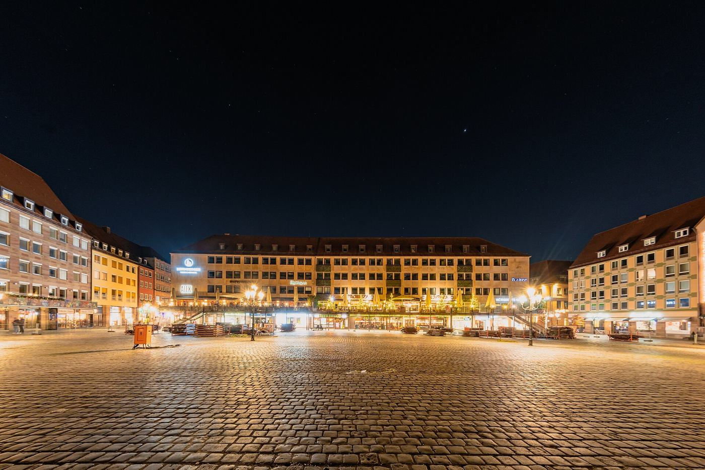

Around the Hauptmarkt
Christmas market · First-timers
The heart of everything: step out of the door into the Christkindlesmarkt, with the castle a 10-minute walk uphill. Several creators had rooms looking straight onto the square - 'you can't beat the view', say Devin & Z. Hotel Sax is right on the square. Book very early for December.
Via Devin & Z, EmiLou Day by Day, A Festival Called Life, Cleared 2 Travel, TripHunter